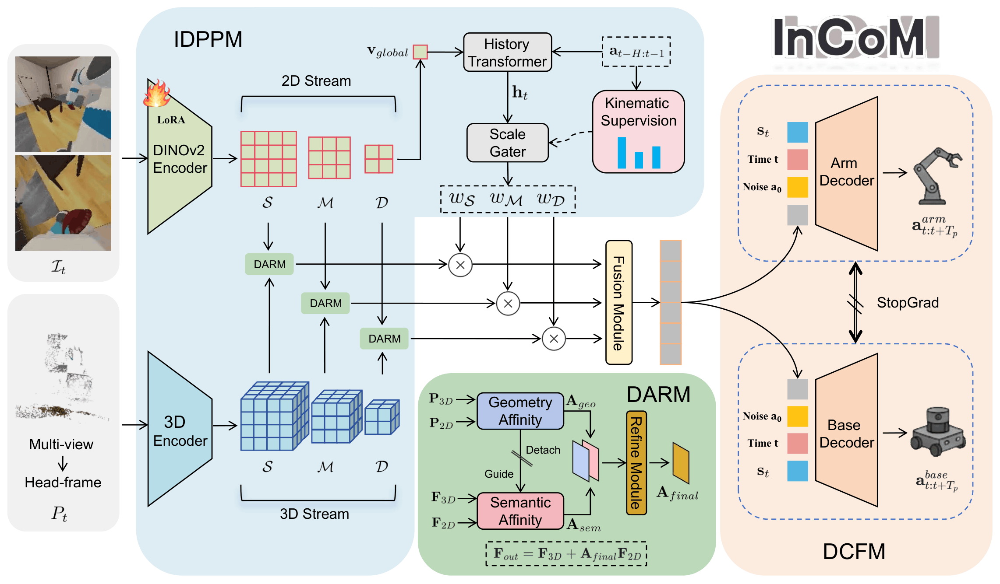

InCoM
Intent-Driven Perception and Structured Coordination for Mobile Manipulation
CoRL 2026
2 School of Advanced Interdisciplinary Sciences, University of Chinese Academy of Sciences
3 Anyverse Dynamics
*Corresponding author
Abstract
Mobile manipulation is a fundamental capability for general-purpose robotic agents, requiring both coordinated control of the mobile base and manipulator and robust perception under dynamically changing viewpoints. However, existing approaches face two key challenges: strong coupling between base and arm actions complicates control optimization, and perceptual attention is often poorly allocated as viewpoints shift during mobile manipulation. We propose InCoM, an intent-driven perception and structured coordination framework for mobile manipulation. InCoM infers latent motion intent to dynamically reweight multi-scale perceptual features, enabling stage-adaptive allocation of perceptual attention. To support robust cross-modal perception, InCoM further incorporates a geometric–semantic affinity refinement mechanism that enhances multimodal correspondence. On the control side, we design a decoupled coordinated flow matching action decoder that explicitly models bidirectional base–arm interactions, alleviating optimization difficulties caused by control coupling. Under matched non-privileged observations and task-specific training data, InCoM improves mean success over DSPv2 by 33.0, 26.1, and 23.6 percentage points on SetTable, TidyHouse, and PrepareGroceries, respectively. Furthermore, its effectiveness is validated on four real-world mobile manipulation tasks, where InCoM achieves higher success rates than ACT and π₀.₅.
Quantitative Results
SetTable
Reproduced success rates (%) are reported as mean ± standard deviation over three runs. For π₀, the checkpoint is fixed and SD measures evaluation-run variability. Bold marks the highest mean in each column. AC-DiT results are taken from its paper and use privileged observations.
| Method | Pick Apple | Place Apple | Open Fridge | Pick Bowl | Place Bowl | Open Drawer | Close Drawer | Mean |
|---|---|---|---|---|---|---|---|---|
| DP | 0.5 ± 0.5 | 54.5 ± 5.1 | 63.0 ± 4.0 | 2.1 ± 0.9 | 63.5 ± 4.3 | 5.3 ± 1.8 | 89.4 ± 1.9 | 39.8 |
| ACT | 1.6 ± 0.9 | 21.2 ± 3.2 | 74.6 ± 3.3 | 9.0 ± 1.9 | 21.7 ± 2.9 | 48.1 ± 3.7 | 91.5 ± 1.8 | 38.2 |
| WB-VIMA | 1.6 ± 1.4 | 57.7 ± 4.7 | 27.0 ± 3.7 | 1.6 ± 1.8 | 60.3 ± 4.2 | 5.3 ± 1.4 | 87.3 ± 2.8 | 34.4 |
| DSPv2 | 1.4 ± 0.3 | 65.2 ± 3.6 | 73.4 ± 3.2 | 1.4 ± 0.8 | 85.7 ± 2.4 | 29.9 ± 3.2 | 98.4 ± 1.4 | 50.8 |
| π₀ | 26.6 ± 3.8 | 48.9 ± 5.2 | 90.5 ± 1.9 | 26.6 ± 4.5 | 56.8 ± 5.9 | 75.5 ± 2.5 | 88.7 ± 2.0 | 59.1 |
| AC-DiT (reported; privileged) | 33.3 ± 1.9 | 33.3 ± 9.4 | 90.7 ± 5.0 | 36.0 ± 6.5 | 17.3 ± 6.8 | 81.3 ± 6.8 | 97.3 ± 1.9 | 55.6 |
| InCoM (Ours) | 59.4 ± 4.3 | 84.1 ± 5.4 | 87.3 ± 2.8 | 84.1 ± 4.6 | 82.5 ± 5.6 | 88.9 ± 2.3 | 100.0 ± 0.0 | 83.8 |
TidyHouse and PrepareGroceries
| Method | TidyHouse | PrepareGroceries | ||||
|---|---|---|---|---|---|---|
| Pick All | Place All | Mean | Pick All | Place All | Mean | |
| DP | 0.0 ± 0.0 | 30.3 ± 3.0 | 15.2 | 0.4 ± 0.3 | 17.7 ± 1.9 | 9.1 |
| ACT | 2.2 ± 0.8 | 31.6 ± 3.2 | 16.9 | 2.0 ± 1.1 | 27.5 ± 2.9 | 14.8 |
| WB-VIMA | 0.8 ± 0.6 | 29.4 ± 3.5 | 15.1 | 0.8 ± 0.8 | 22.0 ± 2.6 | 11.4 |
| DSPv2 | 1.3 ± 0.3 | 42.1 ± 3.1 | 21.7 | 0.9 ± 0.6 | 32.8 ± 2.9 | 16.9 |
| π₀ | 8.6 ± 2.5 | 31.1 ± 3.0 | 19.9 | 5.1 ± 4.6 | 27.2 ± 3.7 | 16.1 |
| InCoM (Ours) | 16.7 ± 1.9 | 78.9 ± 2.9 | 47.8 | 15.0 ± 2.4 | 65.9 ± 3.1 | 40.5 |
Real-world success
Success rate (%) with Wilson 95% confidence intervals; 20 trials per task.
| Method | Throw Rubbish | Close Drawer | Pick Banana | Move Block | Mean |
|---|---|---|---|---|---|
| ACT | 5 [1–24] | 5 [1–24] | 10 [3–30] | 20 [8–42] | 10.00 [5–19] |
| π₀.₅ | 15 [5–36] | 50 [30–70] | 35 [18–57] | 30 [15–52] | 32.50 [23–43] |
| InCoM (Ours) | 50 [30–70] | 65 [43–82] | 45 [26–66] | 45 [26–66] | 51.25 [40–62] |
Method

ManiSkill-HAB Simulation Experiments
InCoM Task Execution Showcase
Baseline Comparison
| Task | ACT | DSPv2 | InCoM |
|---|---|---|---|
| Pick Box from Counter | |||
| Place Can on Counter | |||
| Pick Box from Sofa | |||
| Place Can on Sofa |
Real-World Experiments
| Task | ACT | Pi0.5 | InCoM |
|---|---|---|---|
| Throw Rubbish | |||
| Close Drawer | |||
| Pick Banana | |||
| Move Block |
Citation
@misc{liu2026incom,
title = {{InCoM}: Intent-Driven Perception and Structured Coordination for Mobile Manipulation},
author = {Liu, Jiahao and Cui, Wenbo and Xia, Zhongpu and Wang, Yongliang and Li, Haoran and Zhao, Dongbin},
year = {2026},
eprint = {2602.23024},
archivePrefix = {arXiv},
primaryClass = {cs.RO},
url = {https://arxiv.org/abs/2602.23024}
}